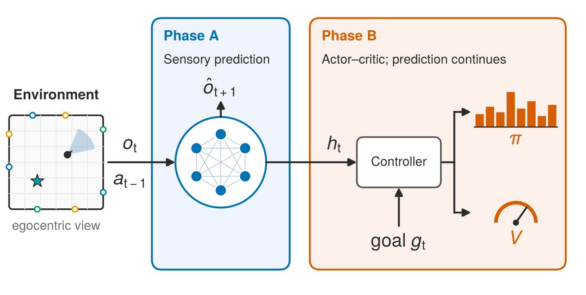

Reward changes the use and structure of predictive spatial maps
bioRxiv preprint, 2026 · Under review at eLife
I recently completed my B.Tech in Information and Communication Technology at DA‑IICT. I am currently a Research Scientist Intern at Lexsi Labs, working on tabular foundation models. I am also a research collaborator at LiraLab, University of Southern California, advised by Prof. Erdem Biyik.
I have previously worked at FinHub, Rotman School of Management, University of Toronto, advised by Prof. Goutham Gopalakrishna and at the Neuro AI Lab, Technion, advised by Prof. Stefano Recanatesi. Before that, I was a research intern at the Georgia Tech Financial Services Innovation Lab.
My research interests span robotics, machine learning, reinforcement learning, and computational neuroscience.
I'm always happy to chat about anything related to my research interests. Feel free to reach out to me via email if you'd like to discuss these topics or potential collaborations!
